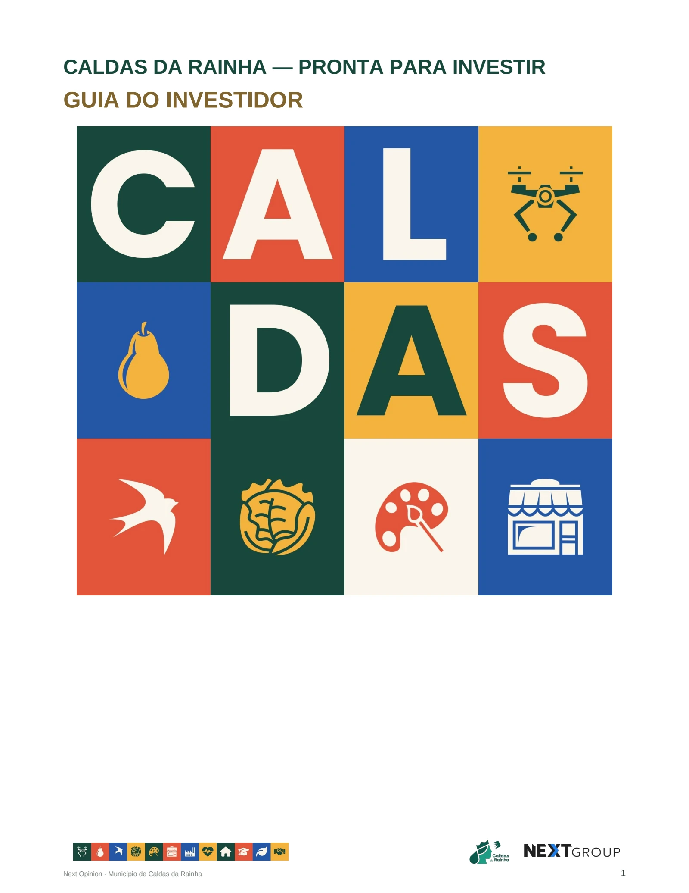

CALDAS DA RAINHA · INVESTIMENTO
Guia do Investidor
Conheça as vantagens de investir em Caldas da Rainha. O guia está disponível em duas edições completas e separadas, em português e inglês.
Acesso público · Sem conta ou palavra-passe
Public library · No sign-in required

Guia do Investidor · Português e EnglishDUAS LÍNGUAS · O MESMO CONTEÚDO
Escolha a sua edição.
Cada edição reúne sete publicações, PDFs individuais e um dossier completo para impressão. As fontes, datas e reservas acompanham os documentos.
EDIÇÃO PORTUGUESA
Português
Guia completo e documentos de apoio ao investimento.
ENGLISH EDITION
English
The complete guide and supporting investment documents.
ÁREA RESERVADA
Trabalha na equipa municipal?
O painel de trabalho e os registos privados de investidores continuam reservados aos utilizadores autorizados. Só esta área exige autenticação.